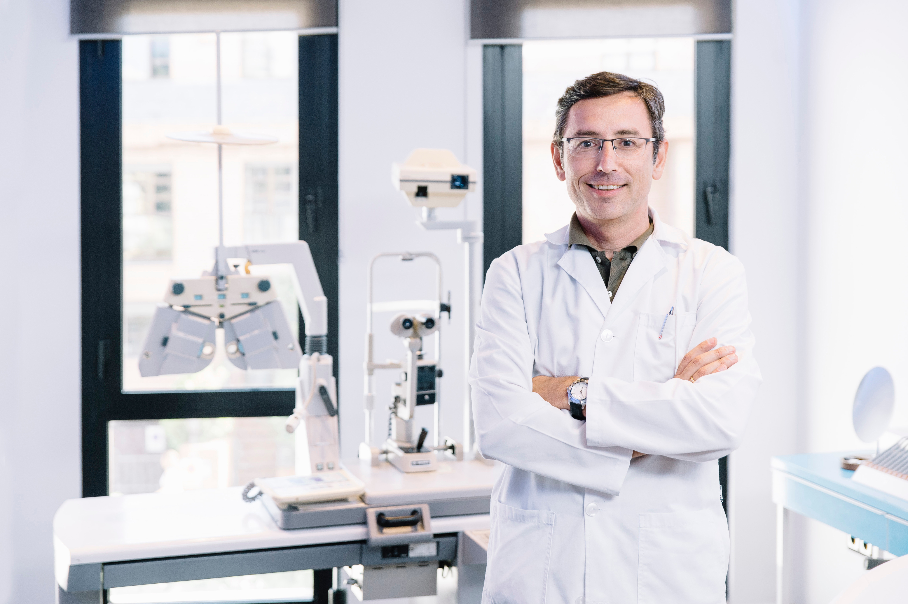

Meet Your New Eyecare Team! Click Here to organise a visit!
- Dr. Melissa Javali (OD, Pediatric & Family Optometry)

- Dr. Melissa Javali has over 15 years of clinical experience in family and paediatric eye care. After earning her Doctor of Optometry degree from a leading Australian optometry school, she completed additional professional development in myopia control, and vision therapy.
- Dr. Alan Koya (BOptom)

- With more than three decades in professional practice, Dr. Alan Koya is widely respected for his expertise in diagnostic optometry, ocular disease detection, and vision rehabilitation. Dr. Koya frequently collaborates with ophthalmologists and general practitioners to ensure holistic patient care, particularly for individuals with chronic health conditions like diabetes or hypertension.
- Sarah Ravie (Optical Dispenser & Lens Specialist)

- Sarah Ravie is a highly skilled optical dispenser with over 12 years of hands‑on experience helping clients choose eyewear that blends comfort, functionality, and personal style.
- Emiliano Brooklin (Receptionist)

- As the first point of contact at Vcare Opticals, Emi sets a warm and welcoming tone for every patient who walks in. With professional experience in customer relations and medical reception, he ensures daily operations run smoothly and that every visitor receives prompt, respectful, and helpful service.